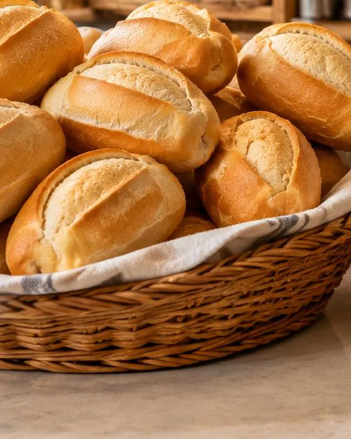
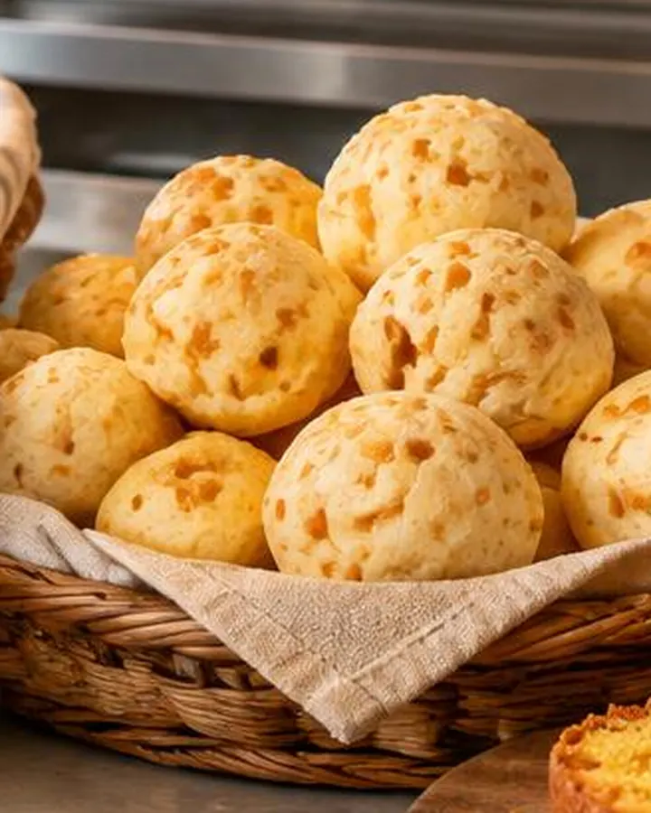
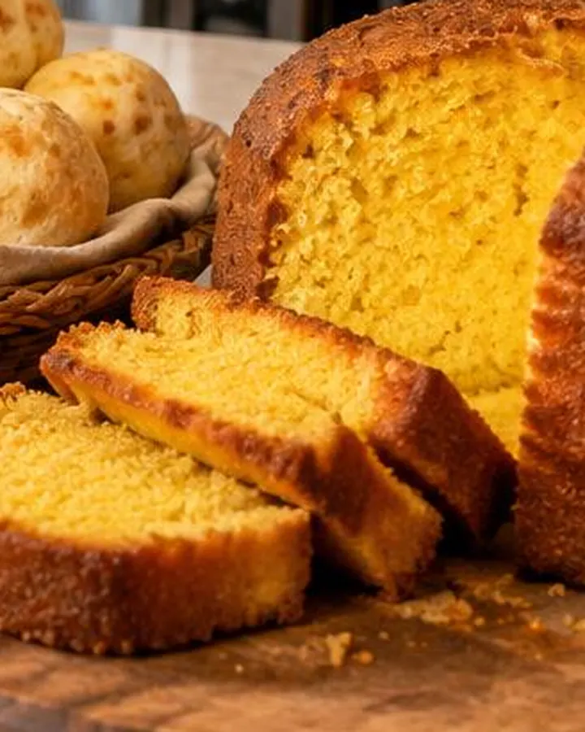
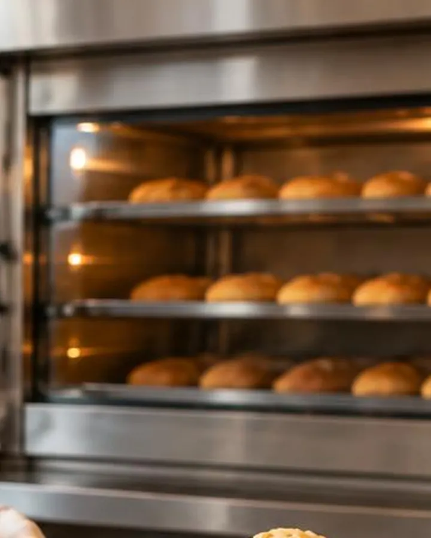
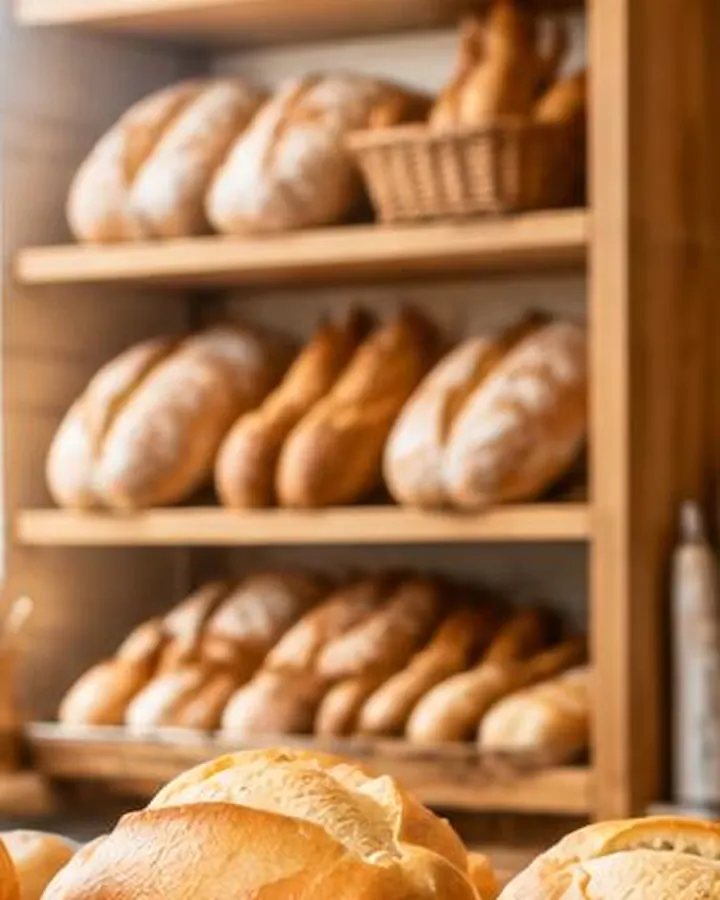
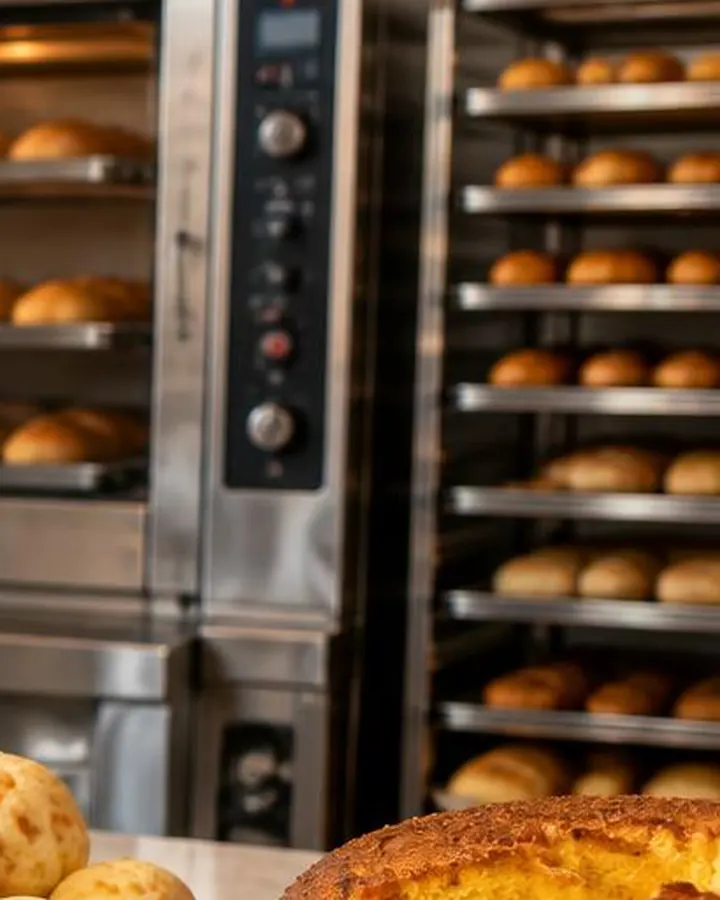

Nossa história
Desde 1994 na esquina da praça
Como a Fornalha começou e por que o pão daqui tem esse gosto.
Nossa história
Três gerações de forno aceso
A Fornalha abriu em 1994, quando a dona Lurdes trocou a cozinha de casa por um forno de lastro na esquina da praça.
Hoje quem comanda é a neta, mas as receitas continuam as mesmas: fermentação longa, manteiga de verdade e nada de pré-mistura.
São três fornadas por dia, às 6h, 10h e 16h. Se quiser garantir, é só encomendar pelo WhatsApp e retirar no balcão.

Do forno
Feito aqui, todo dia





Encomendas
Para festas e empresas
Tortas de aniversárioSalgados para festaCafé da manhã para empresasCestas de presentePão de forma fatiadoBolos caseiros inteiros
Vai querer o de sempre?
Encomende pelo WhatsApp e retire no balcão, sem fila.